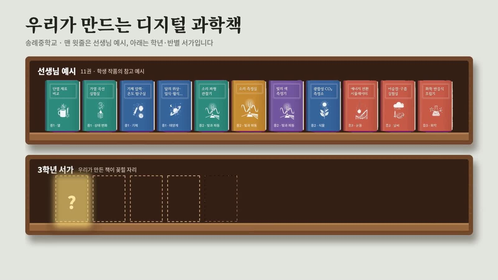

송례중학교 3학년 과학 · STEP 4 출간 + STEP 5 북 페어
우리가 만드는 디지털 과학책
오늘은 드디어 출간하는 날! 작가가 소개하고, 독자가 탐구하는 출간 기념 북 페어

오늘의 순서
출간 기념 북 페어, 이렇게 진행해요
도입 · 5분
완간 축하
학급 책장 공개, 여정 영상 함께 보기
전개 1 · 30분
작가와의 만남
모둠 대표 작가가 우리 책을 소개하고 직접 시연
전개 2 · 정리 · 10분
북 페어와 돌아보기
친구 책 3권을 골라 조작하고 리뷰 남기기, 나의 여정 돌아보기
오늘의 목표 · 우리 책에 담은 원리와 변인을 근거로 소개하고, 친구의 책을 탐구하며 리뷰를 남겨요.
작가와의 만남
대표 작가 발표 순서
한 팀 2~3분
1작가고승재 · 김연서3-4
2작가이우성3-4
3작가박준석3-4
4작가박서영 · 강현준3-4
5작가이희찬3-1
6작가김현수3-1
7작가엄윤아 · 손예주3-1
8작가구은서 · 이예준 · 김윤강 · 임준우3-2
9작가제경진 · 이서준 · 박민재3-2
10작가김태현 · 이서현 · 이호준3-2
11작가임세준 · 강범서3-2
12작가강태우3-2
13작가이승원3-2
모두 수고했어요! 다음 순서는 북 페어
듣는 독자의 미션
발표를 들으며 세 가지를 찾아요
01
원리 찾기
이 책에 담긴 핵심 과학 원리는 무엇일까?
02
변인 찾기
무엇을 다르게 하고, 무엇을 같게 했을까?
03
알게 된 것 찾기
이 책으로 새롭게 알게 된 점은 무엇일까?
STEP 5 · 북 페어
이제 우리 반 책장으로 가 볼까요?
학생 책장 열기 →
책장 코드
SOR-2026-RP67
sci-shelf.netlify.app · 책장 코드를 넣으면 우리 반 책장이 열려요
STEP 5 · 북 페어
친구들이 출간한 책을 읽어요
1
우리 반 책장 열기
2
친구 책 3권 골라 직접 조작
3
개념 · 기능 · 알게 된 내용 정리
4
친구의 책 칭찬 리뷰 남기기

책장 코드 SOR-2026-RP67
STEP 1 기획 · 2 집필 · 3 편집과 교정 · 4 출간 · 5 북 페어
완간을 축하합니다!
원리를 담아 직접 쓴 우리의 디지털 과학책 · 마지막으로 나의 여정, Talk Log를 돌아봐요